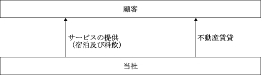

提出会社の最近５事業年度に係る主要な経営指標等の推移
(注) １ 潜在株式がないため、潜在株式調整後１株当たり当期純利益の記載は行っておりません。
２ 連結財務諸表を作成していないため、最近５連結会計年度に係る主要な経営指標等の推移の記載は行っておりません。
３ 第142期、第143期及び第145期の株価収益率については、当期純損失計上のため記載は行っておりません。
４ 第142期、第143期及び第145期の配当性向については、当期純損失であるため記載しておりません。第144期の配当性向については、無配のため記載しておりません。
５ 持分法を適用した場合の投資損益については、関連会社がないため記載は行っておりません。
６ 従業員数は就業人員数を表示しております。
７ 最高・最低株価は、東京証券取引所スタンダード市場（2022年４月３日以前は東京証券取引所ＪＡＳＤＡＱ（スタンダード））におけるものであります。
８ 「収益認識に関する会計基準」（企業会計基準第29号 2020年３月31日）等を第145期の期首から適用しており、第145期以降に係る主要な経営指標等については、当該会計基準等を適用した後の指標等となっております。
1926年７月 株式会社ホテル、ニューグランドを設立。
1927年12月 ホテル営業を開始。
1936年２月 国際観光興業株式会社所有の富士ニューグランドホテルの経営を委任される。
1945年８月 駐留米軍により全館接収、米軍将校宿舎となる。
1947年10月 国際観光興業株式会社の持株を譲渡、委託経営を返還する。
1950年10月 国際観光ホテル整備法により登録される(ホ第６号)。
1952年６月 駐留米軍により全館接収解除され同年７月１日より自由営業を再開。
1963年２月 東京証券業協会に店頭登録される。
1973年12月 横浜髙島屋特別食堂に出店。
1981年12月 国際観光興業株式会社を吸収合併。
1991年７月 新館タワー完成、営業開始、本館改修工事着工。
1992年４月 本館改修工事完了、営業開始。
1997年12月 新館屋上スカイチャペル増築。
1998年11月 ペリー来航の間改装工事完了。
2000年７月 グランドアネックス水町(店舗・事務所賃貸ビル)完成。
2002年７月 横浜髙島屋特別食堂閉店。
2002年10月 横浜髙島屋にホテルニューグランド ザ・カフェを出店。
2003年12月 新館（ニューグランドタワー）客室全面改装工事完了。
2004年４月 本館客室改修改装工事完了。
2004年12月 日本証券業協会への店頭登録を取消し、ジャスダック証券取引所に上場。
2005年６月 そごう横浜店にバー シーガーディアンⅢを出店。
2007年２月 メイン厨房全面改修工事完了。
2007年８月 本館ロビー改修工事完了。
2009年５月 髙島屋横浜店7Ｆ ホテルニューグランド ザ・カフェを閉鎖し、新たに
髙島屋横浜店8Ｆ ル グランを営業開始。
2010年４月 ジャスダック証券取引所と大阪証券取引所の合併に伴い、大阪証券取引所
JASDAQ市場に上場。
2010年10月 大阪証券取引所（JASDAQ市場、ヘラクレス市場及びNEO市場）の各市場の統合に
伴い、大阪証券取引所JASDAQ（スタンダード）に上場。
2013年７月 東京証券取引所と大阪証券取引所の証券市場統合に伴い、東京証券取引所
JASDAQ（スタンダード）に上場。
2014年９月 本館大規模改修工事（第一期）完了。
2016年９月 本館大規模改修工事（第二期）完了。
2018年４月 タワー館客室改装工事（９Ｆ～10Ｆ）完了。
2018年７月 タワー館客室改装工事（13Ｆ～14Ｆ）完了。
2019年３月 ベーカリー工房新設によるパン内製化。
2022年４月 東京証券取引所の市場区分の見直しによりJASDAQ（スタンダード）からスタンダード市場へ移行。
当社は、ホテル及び料飲施設の運営や不動産賃貸業を主な事業内容としており、全てを当社のみで行っております。
当社の事業に係わる位置付け及びセグメントとの関連は次のとおりであります。なお、セグメントと同一の区分であります。
（ホテル事業）
ホテルニューグランド内における宿泊及び料飲（婚礼・宴会含む）施設や髙島屋横浜店及びそごう横浜店内においてレストランを営んでおります。
（不動産賃貸事業）
オフィスビル等の賃貸管理業務を営んでおります。
事業の系統図は、次のとおりであります。

該当事項はありません。
2023年11月30日現在
(注) １ 従業員数は就業人員であります。
２ 平均年間給与は、賞与及び基準外賃金を含んでおります。
３ 従業員数欄の( )内の数字は、外数で契約社員及び臨時雇用員の年間平均雇用人員であります。
４ 全社（共通）として、記載されている従業員数は、特定のセグメントに区分できない管理部門に所属しているものであります。
当社には、ホテルニューグランド労働組合（組合員数157名）が組織されており、サービス・ツーリズム産業労働組合連合会に所属しております。
なお、労使関係は安定しており、特記すべき事項はありません。
(3)管理職に占める女性労働者の割合、男性労働者の育児休業取得率及び労働者の男女の賃金の差異
2023年11月30日現在
(注) １．「女性の職業生活における活躍の推進に関する法律」（平成27年法律第64号）の規定に基づき算出したものであります。
２．「育児休業、介護休業等育児又は家族介護を行う労働者の福祉に関する法律」（平成３年法律第76号）の規定に基づき、「育児休業、介護休業等育児又は家族介護を行う労働者の福祉に関する法律施行規則」（平成３年労働省令第25号）第71条の４第１号における育児休業等の取得割合を算出したものであります。
なお、当事業年度は男性労働者の育児休業取得率が「―」となっておりますが、次期（第147期）以降は発生する見込みであります。
３．「労働者の男女の賃金の差異」については、人事制度上の男女間格差はありませんが、男女の年齢構成・管理職比率・短時間勤務者数などを要因として、男女間で差異が生じております。